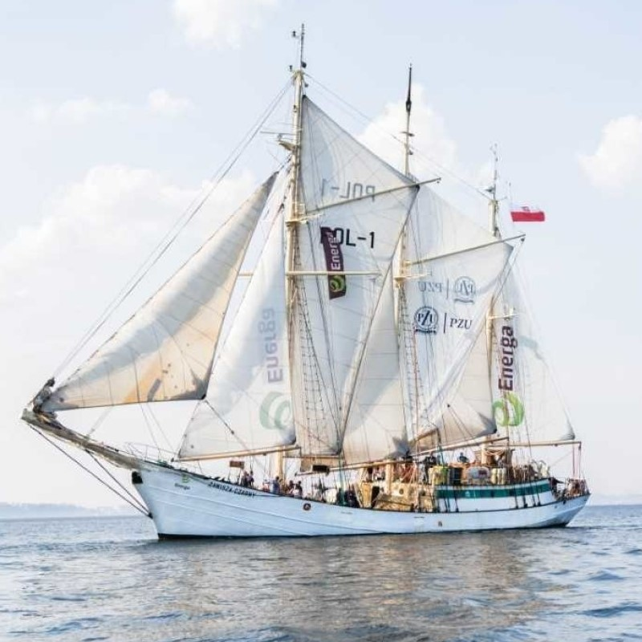

Żagle ZHP
Na samym początku trzeba zaznaczyć, że "Zawisza Czarny to nazwa dwóch statków- pierwszy z nich zakupiony przez ZHP w 1934 roku w Danii szkuner, który był największym skautowym żaglowcem i wzbudzał zazdrość i podziw nawet w Anglii, kolebca skutingu.
W czasie wojny, do 1943 r. nył używany przez Niemców jako „Schwarzer Husar”, został przez nich w końcu porzucony i niszczał. Po odnalezieniu po wojnie, sprowadzony do Gdyni nie nadawał się już do remontu i w 1949 r. został odholowany i zatopiony na wodach Zatoki Puckiej
Drugi „Zawisza Czarny” to stalowy, trzymasztowy szkuner z ożaglowaniem typu Va Marie. Jednostkę zbudowano na bazie kadłuba statku rybackiego (lugrotrawlera typu B 11) „Cietrzew”, zwodowanego w 1952 r. w Stoczni Północnej w Gdańsku. Statek został w lutym 1960 roku przekazany ZHP przez Ministerstwo Żeglugi, po czym zapadła decyzja o przebudowie go na żaglowiec. Prace prowadziła w 1960 roku Gdyńska Stocznia Remontowa, a dokończyła w kolejnym roku Stocznia Marynarki Wojennej
Banderę podniesiono 15 lipca 1961, a kapitanem został delegowany z Marynarki Wojennej kmdr Bolesław Romanowski. W pierwszy rejs wyruszył do Leningradu i Helsinek, a w 1962 r. na czele harcerskiej flotylli Czerwonych Żagli popłynął do Helsinek na Światowy Festiwal Młodzieży i Studentów
Statek przez następne lata przechodził wiele przebudowań, i dużo zmian. 3 czerwca 1984 roku, w trakcie regat atlantyckich Cutty Sark Tall Ships’ Races, w rejonie Bermudów, w bardzo trudnych warunkach pogodowych, żaglowiec uratował osiem osób z załogi żaglowca „Marques”, który zatonął w gwałtownym szkwale. Po wzięciu rozbitków na pokład Zawisza, pomimo wysokiego stanu morza i bardzo silnego wiatru, pozostał w rejonie wypadku poszukując pozostałych ofiar, po czym powrócił z ocalałymi na Bermudy.
W swych rejsach „Zawisza” tak jak jego poprzednik, realizuje cele statutowe harcerstwa. Należały do nich np. w 2000 Rejsy Pokoju z międzynarodową załogą, z młodzieżą państw ogarniętych konfliktami zbrojnymi na Bliskim Wschodzie. W 2000 statek przeszedł gruntowny remont z modernizacją pomieszczeń. Od 2006 roku uczestniczy w programie Zobaczyć Morze, a od 2011 roku rokrocznie Zawiszą harcerze przewożą Betlejemskie Światło Pokoju dla skautów z Bornholmu i Karlskrony.